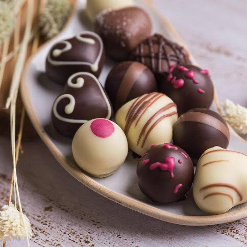
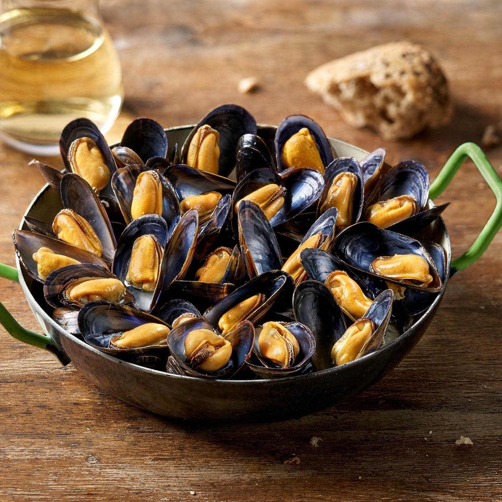
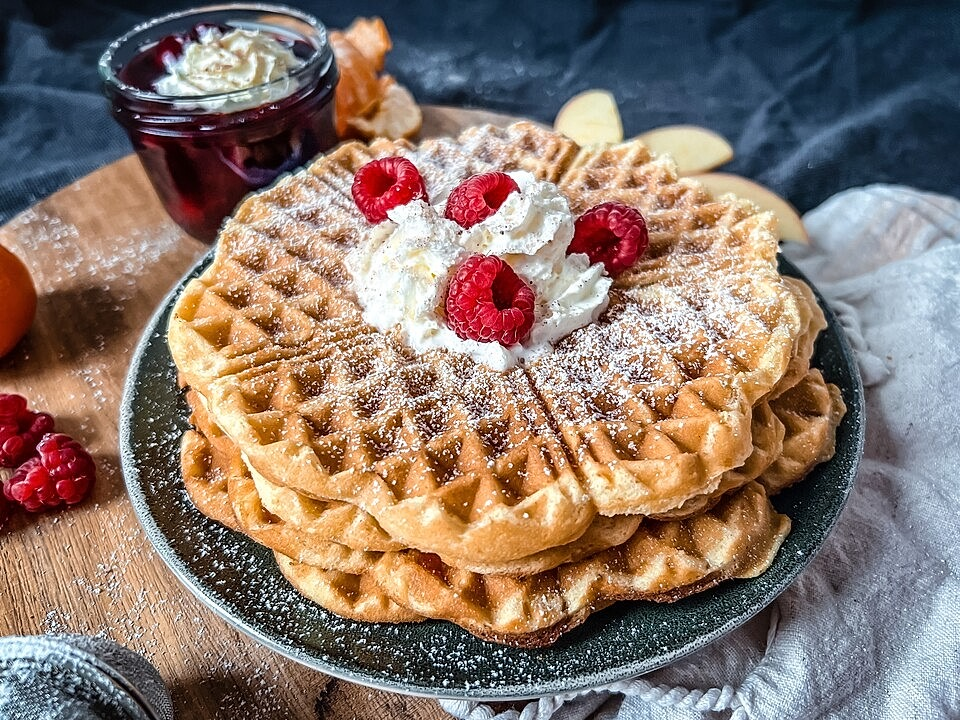

Zwei gute Gründe reichten aus, um die kulinarischen Künste der Belgier weltbekannt zu machen: Pommes und Pralinen sind eine belgische Erfindung.

Andere Essensspezialitäten sind z.B. Moulws Frites (Miesmuscheln), Lapin à la Guere, Waterzooi (Wassersud), Jambon d'Ardenne, Käse und Waffeln, welche man am Stand essen kann.


Außerdem ist Belgien bekannt für seine Weine und Biere.